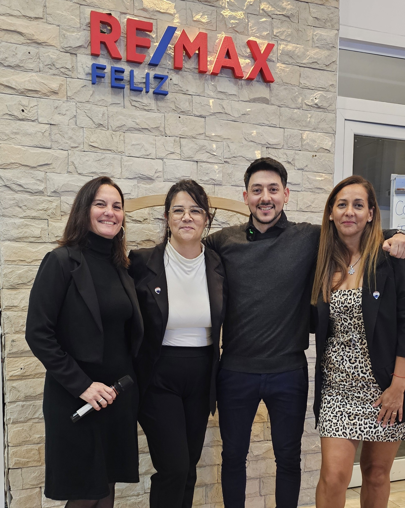
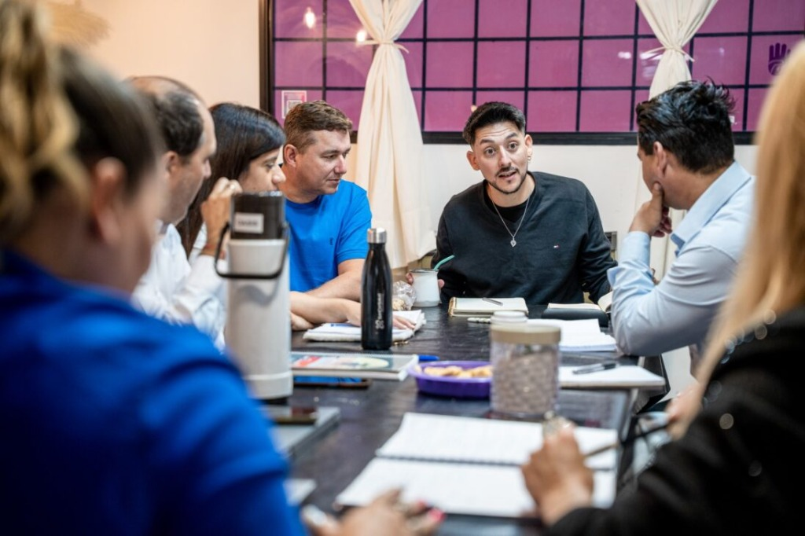

Dejá de trabajar
en tu negocio.
Empezá a liderar en él.
Acompañamos a dueños de negocios de 2 a 30 empleados a facturar más, delegar con criterio y construir un equipo que funcione sin que vos tengas que estar en todo.





¿Te suena conocido?
Tu facturación no crece aunque trabajes más horas. Dependés de referidos y no tenés un sistema predecible para conseguir clientes nuevos.
Tus empleados necesitan que estés en todo. Si te vas un dÃa, algo falla. La empresa no funciona sin vos.
Manejás el negocio a ojo y por sensación. No tenés números claros y tomás decisiones importantes sin información real.
Nuestros Programas
Soluciones diseñadas para que tu negocio deje de depender de vos.
M·A·R
Método Acelerador de Resultados
Arquitectura para empresas autónomas. Plan personalizado con tres niveles de evolución: Tracción, Impulso y Exponencial.
- Tableros de KPIs y control financiero
- Delegación y manualización
- Automatización con IA y n8n (automatización inteligente)
P·A·C
Programa Acelerador de Crecimiento
8 semanas de transformación grupal presencial. ConsultorÃa real para dueños reales que quieren dejar de improvisar.
- Mentalidad de dueño y liderazgo
- Orden financiero inteligente
- Estrategia comercial ganadora
C·D·E
(Capacitación de Equipo)
Formamos a tus gerentes y encargados para que puedan liderar la operación con autonomÃa, comunicación efectiva y resultados.
- Comunicación y Feedback
- Gestión de Equipos de Alto Rendimiento
- Liderazgo y Toma de Decisiones
Resultados reales, negocios reales
Más de 100 empresas transformadas en 10 años. Estos son algunos de sus resultados.